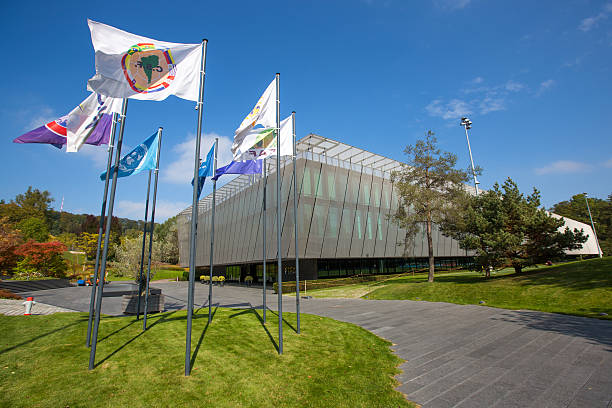

A FIFA foi fundada em 21 de maio de 1904, em Paris, França. A criação da entidade foi impulsionada pela necessidade de unificar as regras do futebol e promover competições internacionais. Os fundadores eram representantes de sete associações nacionais de futebol da Europa: França, Bélgica, Dinamarca, Países Baixos, Espanha, Suíça e Suécia.A primeira competição internacional organizada pela FIFA foi a Copa do Mundo de Futebol, realizada no Uruguai em 1930. Desde então, a Copa do Mundo se tornou o torneio de futebol mais prestigiado e assistido globalmente. A FIFA também organiza outras competições importantes, como a Copa das Confederações, o Campeonato Mundial de Clubes da FIFA e o Campeonato Mundial Sub-20.
Funções da FIFA
Organização de Competições: A FIFA é responsável pela organização de grandes torneios internacionais, incluindo a Copa do Mundo e os torneios de categorias de base. Ela também supervisiona a realização de competições intercontinentais, como a Copa do Mundo de Futebol Feminino e a Copa do Mundo de Futebol de Areia.
Regulamentação e Regras: A FIFA define as regras do jogo, conhecidos como “Leis do Jogo”, em colaboração com a International Football Association Board (IFAB). Essas regras são aplicadas em todos os níveis do futebol mundial.
Desenvolvimento do Futebol: A FIFA investe no desenvolvimento do futebol ao redor do mundo, apoiando programas de treinamento, infraestrutura e crescimento das associações membros, além de promover iniciativas para o desenvolvimento do futebol feminino e das categorias de base.
Promoção e Parcerias: A FIFA trabalha para promover o esporte globalmente e estabelece parcerias com marcas, governos e outras entidades para promover o futebol e seus valores.
Sede da FIFA
A sede da FIFA está localizada em Zurique, Suíça. O edifício principal da FIFA, conhecido como o “Casa da FIFA”, foi inaugurado em 2006 e é um centro moderno que abriga as principais atividades administrativas da organização.

Estrutura Organizacional
A FIFA é composta por 211 associações membros, que representam países e territórios ao redor do mundo. Essas associações são divididas em seis confederações continentais: UEFA (Europa), CONMEBOL (América do Sul), CONCACAF (América do Norte, Central e Caribe), CAF (África), AFC (Ásia) e OFC (Oceania). Cada confederação é responsável por organizar competições regionais e ajudar no desenvolvimento do futebol em sua área.